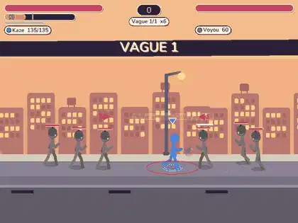
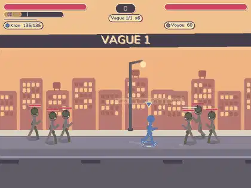

Plainte : « on se fait souvent prendre en sandwich, on prend plein de coups d'un coup et on ne peut rien faire ». J'ai fait jouer des bots (9 héros, 18 chapitres, solo normal / difficile, spam léger, tortue, coop 2 / 4 / 8 : 1134 parties, 8 heures de jeu) et mesuré les coups subis en chaîne sans image libre. Détails : tools/playtest/sandwich.md, tableaux : tools/sandwich_report_avant.md et _apres.md. Les combats de boss ne changent pas.
| Mesure | Avant | Après | Lecture |
|---|---|---|---|
| Séries de 4 coups ou plus (par heure de jeu) | 170 | 19 (toutes des saisies) | plafond tenu en solo, coop 2 / 4 / 8 (la saisie se contre par la lutte) |
| Temps passé en sandwich | 2,4 % | 1,8 % | la meute n'entre plus de l'autre côté d'un camarade |
| Coups pris en sandwich | 6 % | 3 % | passif : 13 % -> 8 % |
| 2 attaquants ou plus en même temps | 0,6 % du temps | 0,4 % | décisions simultanées vues par le jeton |
| Coups subis par minute | 43,9 | 33,5 | -24 % |
| PV perdus par minute | 260 | 212 | -18 % |
| Victoires des bots | 52 % | 56 % | +4 points seulement (solo normal : 15 % -> 24 %, difficile : 7 % -> 14 %) |
| Incapacité continue max | 6,7 s | 6,2 s | chute + réveil protégé comptés |

Les sbires frappent des deux côtés en même temps, le héros enchaîne les stuns.

Flanc tenu d'un seul côté, coup annoncé (« ! » orange), anneau et flèches rouges quand on est encerclé, 3 coups maximum puis réveil protégé.